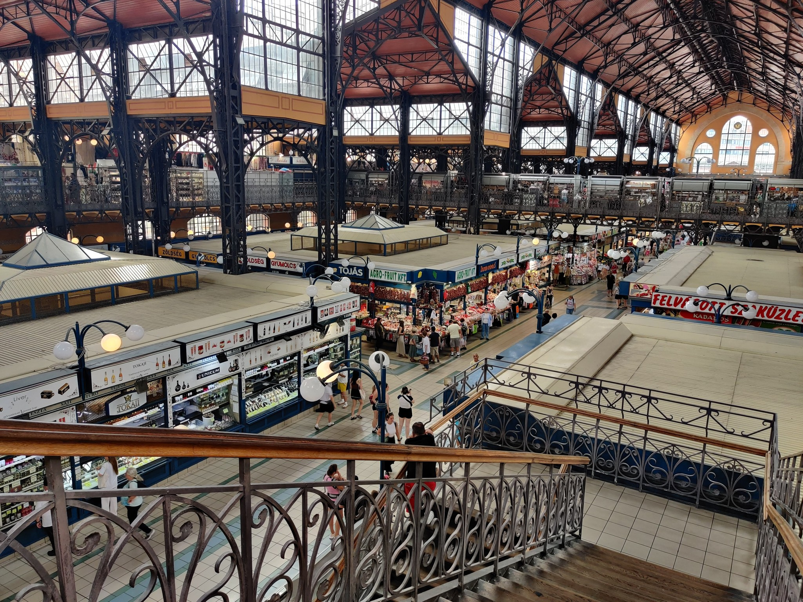
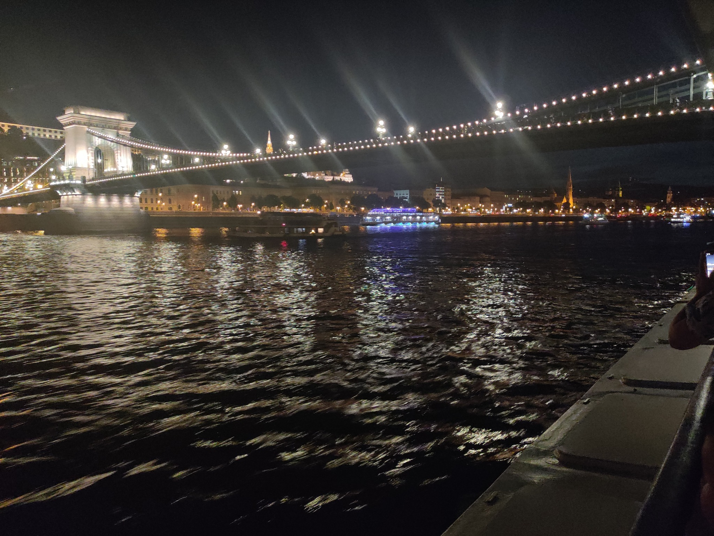
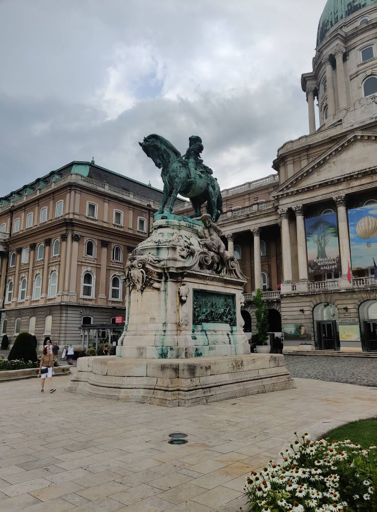

Tästä jatkuu edellisen sivulta alkaneet tapahtumat. Lento laskeutui Budapestiin paikallista aikaa klo 12:20. Huomatkaa että Unkarissa on sama kellonaika kuin Ranskassa ja Belgiassa vaikka se onkin aika kaukana kummastakin. Budapestin majoitukseeni kuului ilmainen taksikyyti lentokentältä hotelliini. Seuraavan kuuden yön ajan majapaikkana toimi Hotel Gloria Budapest City Center jonne Saavuin tunti ennen sisäänkirjautumisen alkamista. Huone kuitenkin oli jo valmiina kun saavuin niin pääsin heti sisään.
Kun olin saanut purettua matkalaukusta tavarat huoneeseen niin päätin lähteä tutustumaan Budapestin keskustaan. Hankin itselleni 72h lipun millä pystyin liikkumaan huoletta julkisissa. Päätin käyttää enemmän julkisia koska jalat olivat edelleen kipeät edellisiltä päiviltä. Tältä päivältä ei ole hirveästi kuvia. Muistan nähneeni muutaman stadionin lähellä toisiaan (toisen nimi oli Groupama Arena). Kokeilin myös paikallista ruokaa Langosia. Se näyttää rieskan ja pizzan yhdistelmältä. Hyvää oli. Muistan myös käyneeni yhdessä Budapestin kylpylöistä (nimeä en muista) missä vietin pari tuntia. Siinä se päivä sitten olikin. Loppuilta meni hotellilla.
 Ensimmäinen täysi päivä Budapestissä ja se on täynnä ohjelmaa. Tällä kertaa jopa muistan mistä oon kuvat ottanut. Kävin ainakin Budapestin kauppahallilla, Unkarin kansallismuseossa, Pyhän Tapanin Tuomiokirkolla, Tonavan rannalla katsomassa pronssista tehtyjä kenkiä sekä Unkarin parlamenttitalolla.
Budapestin kauppahalli oli iso ja avonainen. Se jakautui kahteen kerrokseen. Alakerrassa oli pääasiassa ruokapaikkoja kun taas yläkerta oli ahdettu täyteen matkamuistomyymälöitä. Yläkerran käytävät olivat myös suurimmaksi osaksi todella kapeita. Ostin kaikki tuliaiset täältä.
Unkarin kansallismuseossa käyminen kuului yhteen niistä kohteista missä erityisesti halusin käydä. Museo oli täynnä esineitä Unkarin historiasta vanhoista käyttötavaroista taideaarteisiin. Alkuun luinkin kaikki englanniksi kirjoitetut esittelytekstit mutta Loppuilta päätin vain kiertää näyttelyt loppuun koska muuten aikaa olisi kulunut tuntikausia. Tulevaisuudessa aion jättää museokäynnit viimeiseksi jos aikaa riittää.
Seuraavaksi kävin Pyhän Tapanin kirkossa missä kiipesin myös torniin missä sain otettua kuvia kaupungista. Jalat meinasivat väsyä kiivetessä.
Sitten pronssista tehnyt kengät Tonavan rannalla. En tiedä mikä legenda niiden takana on mutta ne luokitellaan nähtävyydeksi ja paljon muitakin turisteja oli paikalla pällistelemässä niitä. Suht lähellä aiemmin mainittuja kenkiä sijaitsee Unkarin parlamenttitalo. Kiersin rakennuksen ympäri mutta en käynyt sisällä.
Kyllä. Tämäkin viikonloppu meni turnauksessa. Tällä kertaa vuorossa Cardfight!! Vanguard -pelin Lyrical Cup-formaatti. En odottanut tätä formaattia innolla mutta kun paikalla olin niin päätin silti osallistua. Tuloksellisesti meni paremmin kuin odotin. 3-3 eli 50 % voittoprosentti. Loppupäivästä en sit muista mitä tein enkä kuviakaan ottanut niin se siitä.
 Tänään vuorossa oli Cardfight!! Vanguard -pelin Standard-formaatti ja kuten viikkoa aiemmin niin myös tähän ilmoittauduttiin tiimeinä. Minun tilanne kuitenkin oli se että paikalle tullessani minulla ei ollut tiimiä kasassa joten se piti saada kasaan paikan päällä ennen turnauksen alkua. Valitettavasti en löytänyt kuin yhden henkilön joka oli myös vailla tiimiä. Päätimme kuitenkin osallistua kahden hengen tiiminä mikä meinaa sitä että kaikki vastustajat saavat automaattisesti yhden voiton ilmaiseksi. Itselläni päivä meni erittäin hyvin. Tuloksena 4-1 eli vain yksi tappio. Valitettavasti tiimikaverini hävisi kaikki pelinsä joten tiimin tulos jäi 0-5:n.
Illalla kävin Tonavan jokiristeilyllä. Se maksoi muistaakseni 20 €. Sillä sai risteilyn lisäksi myös alkumaljan. Risteily kesti noin tunnin verran.
 Toiseksi viimeinen täysi päivä Budapestissä ja paljon nähtävää. Kävin ainakin Budan linnassa, Sankareiden aukolla ja Margitinsaarella.
Budan linna sijaitsee Tonavan länsipuolella Linnavuorella. Sinne nousin köysiratahissillä. Linnassa toimii nykyään museo minkä kävin kiertämässä. Linnan alueella oli menossa restaurointitöitä.
Budan linnassa käytyäni palasin takaisin Tonavan itäpuolelle. Päädyin lopulta Sankareiden aukiolle. Sieltä matkasin Margitinsaarelle. Se sijaitsee Tonavan keskellä ja sinne pääsee siltaa pitkin. Vietin saarella yllättävän kauan vaikka sää huononi yllättäen. Tähän mennessä koko Budapestissä olon ajan on ollut +40 astetta lämmintä ja yhtäkkiä alkoi myrsky. Saaresta sen verran että siellä on puistoja ja suihkulähde minkä luona oli musiikkiesitys mitä seurasin.
Kuten otsikossa mainitaan niin kyseessä oli kylpyläpäivä. Halusin rentoutua vielä ennen kotiinpaluupäivää. Se tuli kyllä tarpeeseen. Kylpylän nimi on Szechenyi. Yksi euroopan suurimmista kylpylöistä. Siellä on eri lämpötiloihin kuuluvia altaita kylmäaltaista kuumiin. Saunojakin löytyi erilaisia ja kuumin taisi olla reilu 90 astetta. Sää oli alkuun sen verran huono että ulkoaltaille en mennyt kuin vasta myöhemmin. Vietin kylpylässä useamman tunnin. Kuvia en valitettavasti ottanut.
Kävin vielä hetken kiertämässä Budapestin keskustaa ja loppupäivä menikin pakatessa seuraavan päivän kotiinpaluuta varten.
Lento Budapestistä Suomeen lähti vasta klo 18:55 eli ei ollut aamulla kiirettä. Aamupalan jälkeen kirjauduin ulos hotellista ja lähdin vielä kiertelemään Budapestin keskustaa. Olin varannut paikan klo 16:25 lentokentälle menevästä flibco-bussista. Halusin kuitenkin mennä jo aikaisemmalla bussilla. Huomasin kuitenkin että niitä ei tullutkaan siihen aikaan kuin piti joten aloin huolestua että mitä jos sekään bussi mihin varasin paikan ei tule myöskään. Päätin sen takia mennä lentokentälle muutaman mutkan kautta. Budapestin kentälle ei pääse junalla koko matkaa vaan jouduin ottamaan vielä bussin toiselta asemalta. Pääsin kentälle hyvissä ajoin ja siellä ei ollut mitään hämminkiä.
Lentoni lähti ajallaan eli paikallista aikaa klo 18:55 ja se laskeutui Helsinki-Vantaan lentokentälle Suomen aikaa klo 22:15 missä eno oli vastassa. Se oli sitten siinä. Vajaan kahden viikon ja kolmen maan reissu oli tullut päätökseen. Mukavaa oli vaikka jalat olivatkin kipeät jonkin aikaa.